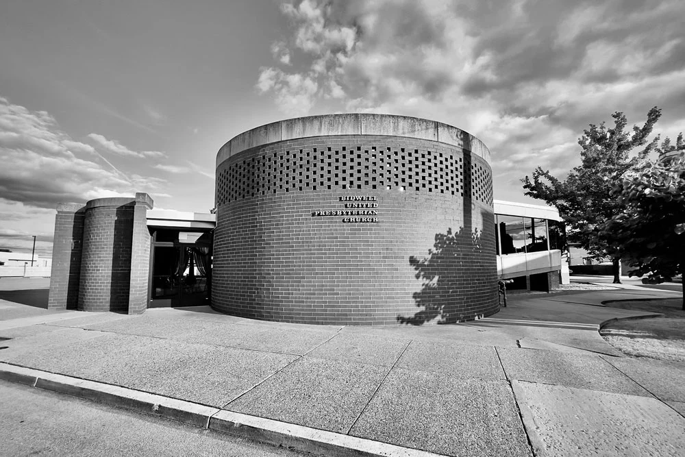

Manchester · Pittsburgh’s North Side
Welcome to the Well
Our hearts and our doors are open to receive you. Join us for worship, for Bible study, or for any of the ways this congregation has been serving Manchester since 1914.
Sunday Worship
11:00 a.m.
Every Sunday in the sanctuary
Sunday Bible Study
10:00 a.m.
Classes for men, women, and youth
Bible Study
Mondays, 7:00 p.m.
Book by book, chapter by chapter
A word of welcome
It is our joy to welcome you as part of our family in Christ
Our mission is to help this world to realize the love and grace of our Lord Jesus Christ; to always proclaim the “Good News” of a living and forgiving Savior; to offer a nurturing and supportive ministry to those in need; to encourage each member to discover and apply their God-given gifts for the benefit of Christ’s Church; and to enjoy the fellowship of one another through united worship.
Our vision is to reach those who would otherwise be left behind.
Our hearts and our doors are open to receive you. Feel free to join us for worship service, Bible study, or any of our community and church events. We are ready to meet you, greet you, worship and pray with you.
A note on where we are. Bidwell is currently in a season of pastoral transition. Our Pastoral Nominating Committee is at work seeking the minister God is calling to serve this church next. Worship, study, and every ministry of this congregation continue as they always have — and visitors are as welcome now as ever.
Acts 2:1–4
“When the day of Pentecost came, they were all together in one place. Suddenly a sound like the blowing of a violent wind came from heaven and filled the whole house where they were sitting. They saw what seemed to be tongues of fire that separated and came to rest on each of them. All of them were filled with the Holy Spirit and began to speak in other tongues as the Spirit enabled them.”
Find your place
Life at Bidwell
-
Worship & Music
The Voices of Judah Choir, the Praise and Worship Team, and the mime ministry “Just One Breath of Life” lift praise together each week.
Our ministries -
Christian Education
Study for adults and youth at 10:00 a.m., Sunday school for children during worship, and a Monday evening study that walks the Bible book by book.
Study with us -
Youth Ministry
Skating, bowling, movies, spirit-filled parties, and quiet moments of reflection — young people discovering the joy only the Lord can bring.
For our youth -
Community Outreach
PIIN, Presbyterian Women and Men, Scouting, and our partnership with the Synod of Blantyre in Malawi.
Beyond our walls
Since 1914
A congregation founded so that people could have a voice
On Sunday, October 25, 1914, sixteen people from Allen Chapel A.M.E. were called to start a new place for worship in their community. They wanted a place where people could have a voice and control over their religious affairs, and “receive all those who might desire the light of the gospel.”
That desire established the mission of the church known today as Bidwell Presbyterian Church — a congregation whose work gave Manchester its recreation center and vocational training center, which continue today as the Bidwell Cultural and Training Center and the Manchester Youth Development Center.
Read our historyCome as you are
Whether you have worshipped here for fifty years or are looking for a church home for the first time, there is a seat for you on Sunday morning.